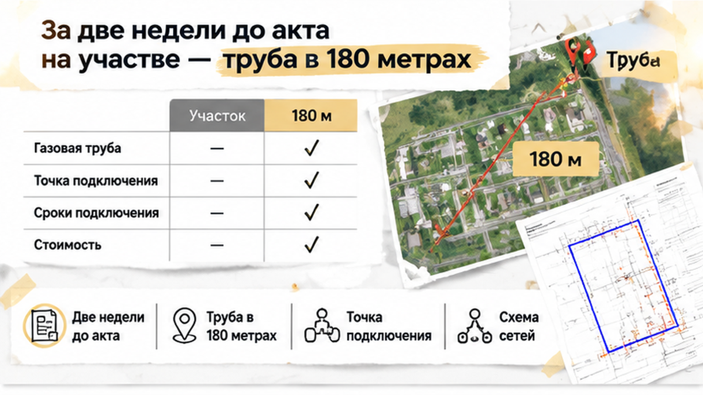
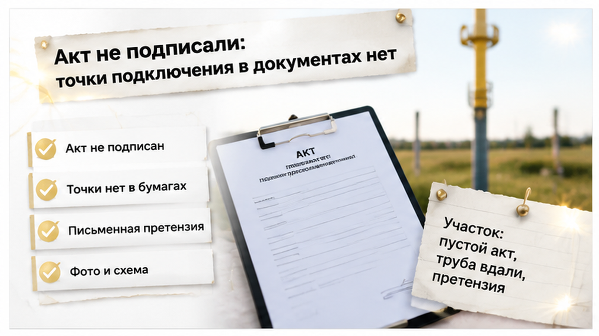
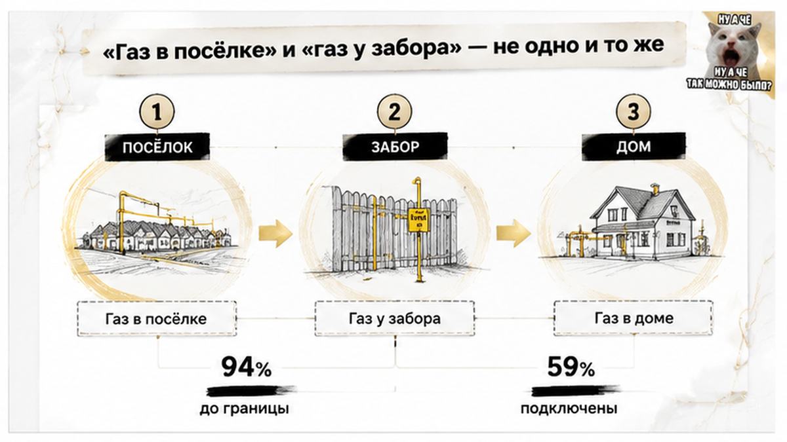
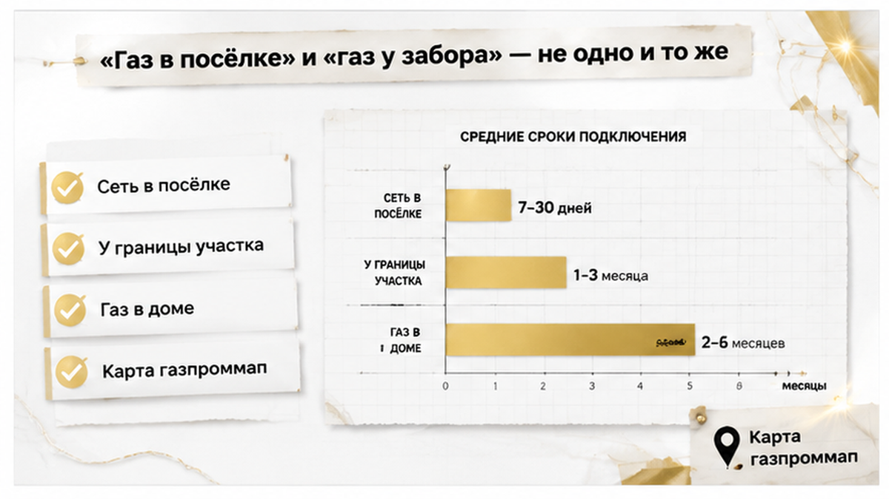
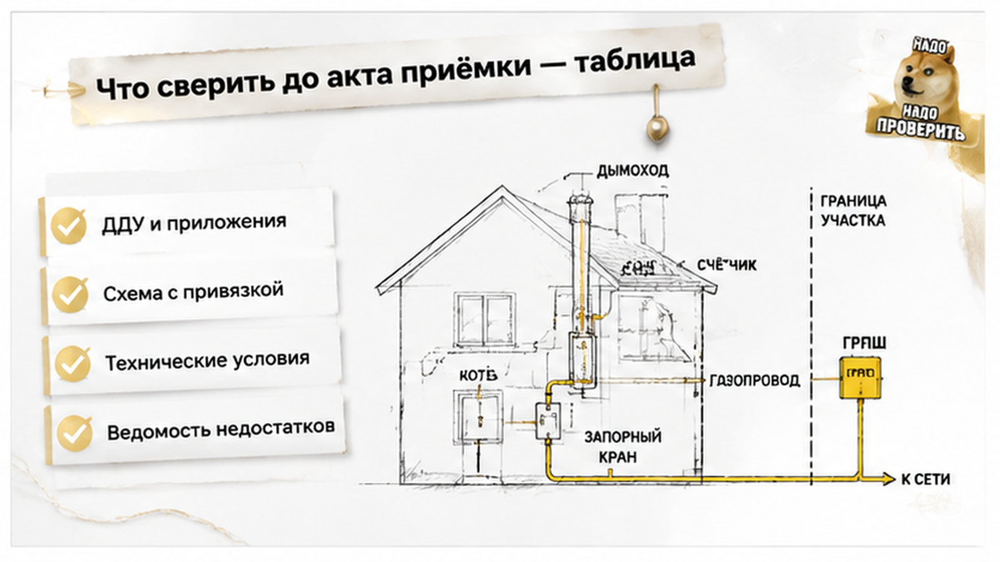

Под Тюменью семья покупала коттедж с газом «к забору», а перед передачей обнаружила трубу примерно в 180 метрах от участка. Подведение сети до границы было указано не только в презентации, но и в ДДУ — договоре участия в долевом строительстве. В день, когда покупатели стали выяснять, где подключать дом, привычная фраза про коммуникации перестала быть понятной. Вместо конкретного места подключения им предложили отдельно оплатить продолжение сети. Расскажу изнутри: здесь сначала нужно разобраться, что уже входит в цену дома, и только потом обсуждать новые платежи.
Я Святослав Шакин, The Риэлтор, Тюмень. В Telegram и MAX разбираю условия покупки новостроек простым языком: что спросить, какие бумаги открыть и что проверить до брони или аванса.
Семья выбрала новый дом от застройщика в коттеджном посёлке под Тюменью. Покупали по ДДУ. А значит, смотреть нужно было не только на стены и крышу, но и на то, с какими коммуникациями застройщик обязался передать коттедж.
В презентации обещали «газ к забору». В договоре и проектной декларации тоже фигурировало подведение к границе участка. Не просто газифицированный посёлок и не возможность когда-нибудь присоединиться к соседней трубе. Ориентир был вполне земной: вот участок, вот его граница.
Обычный покупатель спрашивает: «Газ будет?» Профессиональный вопрос длиннее: «До какого места его доведут, к какому сроку и где это записано?» Разница кажется занудством ровно до разговора о доплате.
При этом газ у границы ещё не означает работающий котёл в доме. Труба по участку, оборудование, монтаж — отдельные работы. Но покупателю важно заранее понимать, где заканчивается оплаченная работа застройщика и начинается его собственная. Не угадывать эту границу после покупки.
Проектная декларация — обязательная информация о проекте, а не рекламный буклет. Её стоит читать рядом с ДДУ и приложениями: к какому участку относится обещание, какие есть условия подключения, предусмотрена ли отдельная плата. Знакомая фраза не отменяет соседние пункты.
Похожую проверку разбирал в истории, где кладовку оплатили по ДДУ, а на передаче помещения не оказалось. Сравниваем не впечатление от покупки, а обещанное и фактически предъявленное. Красивый готовый дом сам по себе не подтверждает готовность всех коммуникаций.

До намеченного подписания акта оставалось примерно две недели. Семья стала выяснять, где именно сможет подключить дом. Тут общий ответ «в посёлке газ есть» уже не подходил: требовалась точка для конкретного участка.
Само расстояние до трубы ещё не доказывает нарушение ДДУ. Нужны договор, приложения и схема сетей. Но и труба неподалёку не подтверждает исполнение обещания «до границы». Надо установить, какой отрезок предстоит построить и кто обязан это сделать.
Я бы на такой проверке задавал простой вопрос: «Покажите на схеме, где заканчивается ваша работа». Не весь посёлок на генплане, не направление будущей прокладки. Конкретное место, привязанное к покупаемому участку.
Передаточный акт оформляет передачу объекта покупателю. Поэтому сначала стоит понять, что принимаешь вместе с домом, а что остаётся недоделанным или требует отдельного заказа. Оставлять этот разговор на после получения ключей — значит подписывать документ, ещё не разобравшись в составе покупки.
Семье требовалось связать обещание из договора с реальным местом подключения. Вместо этой ясности разговор перешёл к цене продолжения сети.
Ответ застройщика был уже не про обещания, а про деньги: «Дотянуть до границы» — 620 тысяч рублей. Можно в рассрочку. Для семейного бюджета это новая статья расходов перед самой передачей дома, когда цену покупки, казалось бы, уже согласовали.
Только рассрочка отвечает на вопрос «как платить». А семья ещё не получила ответа на другой: почему за эту работу вообще нужно платить отдельно? В ДДУ и проектной декларации газ был указан до границы участка. Не котёл, не монтаж отопления, не труба от забора до кухни — именно подведение сети к земле покупателей.
Обычный покупатель в такой ситуации начинает считать: «А если найти подрядчика дешевле?» Профессиональный вопрос звучит иначе: «Покажите состав работ и пункт договора, по которому они оплачиваются сверх цены дома». Сначала разбираемся с обязанностью. Потом — со сметой.
Названные 620 тысяч — предложение застройщика в этой истории. Не тариф газораспределительной организации, которая занимается подачей и подключением газа. И не средняя цена подключения коттеджа под Тюменью. Сравнивать эту сумму с расходами соседа без документов на сеть и перечня работ — значит сравнивать разные покупки.
Я бы положил рядом исходный ДДУ, приложения и предложение о доплате. Что именно было включено в цену? Где заканчивается работа застройщика? Есть ли условие об отдельной оплате? Если обещана только возможность подключения — это одна договорённость. Если подведение к границе конкретного участка — другая. Допсоглашение стоит обсуждать после этой сверки, а не вместо неё.
Сходный вопрос был в истории, где кладовку оплатили по ДДУ, а на передаче помещения не оказалось. Удобное предложение продавца не заменяет обещанный результат. Здесь тоже важна не готовность застройщика «помочь», а то, какую часть этой помощи покупатель уже оплатил вместе с домом.

Семья остановилась до подписания передаточного акта. Понятной точки подключения в документах не было. А предложение заплатить за продолжение сети не объясняло, как это сочетается с условием ДДУ.
На этом история пока заканчивается. Подтверждённого решения суда, возврата денег или устранения расхождения нет. Покупатели не приняли дом, но одна неподписанная бумага ещё не определяет, кто обязан выполнить спорные работы и за чей счёт.
Остановиться перед актом — не значит исчезнуть из разговора. Теперь нужно письменно связать обещанное с обнаруженным: вот пункт договора, вот описание в декларации, вот вопрос, на который документы о сети не отвечают. К обращению стоит приложить соответствующие страницы, имеющуюся схему, фотографии и переписку. Устный разговор о газе должен превратиться в конкретный запрос застройщику.
Это не совет всем покупателям отказываться от приёмки. Это способ не подменить проверку обязательств обсуждением удобного платежа. Семья сохранила возможность разобраться до своей подписи; дальше нужны документы и обоснованная позиция, а не ожидание, что спор разрешится сам.
Газ в 180 метрах от забора — это выполнение ДДУ или отдельная услуга застройщика?


В рекламе все три состояния легко помещаются в одно слово: «газ». Для семейного бюджета это три разных результата. Сеть есть в посёлке. Сеть доведена до границы вашего участка. Газ поступает в дом, котёл работает. Между ними — работы, документы и расходы.
Обычный покупатель спрашивает: «Газ есть?» Профессиональный вопрос звучит иначе: «До какого места его обязуются довести, кто это делает и к какому сроку?» Ответ нужен не про соседнюю улицу, а про участок, который вы покупаете.
«К забору» не означает «с готовым отоплением». Труба от границы до дома, оборудование и монтаж — отдельная часть задачи. Но и наличие сети на территории посёлка нельзя автоматически выдавать за выполненное обязательство довести её до конкретного участка.
Разницу видно даже в областных цифрах. По сведениям облдумы на 1 июня 2026 года, сети довели до границ 28 780 участков ИЖС — это 94% договоров. Фактически подключили 18 138, или 59%. Статистика не решает спор семьи с застройщиком. Она показывает другое: сеть у участка и газ в доме — не один результат.
С догазификацией тоже важно дочитать условия. Это программа, по которой при соблюдении её требований сеть до границы участка в газифицированном населённом пункте подводят бесплатно для заявителя. Работы внутри участка, оборудование и монтаж обычно оплачивает собственник.
Возможность участия можно предварительно проверить по адресу на карте газификации. Но карта — не приложение к вашему ДДУ и не подтверждение исполнения договора. Предложение «потом подадите заявку» само по себе не закрывает уже принятое застройщиком обязательство.

Я начинаю не со стоимости трубы. Сначала открываем ДДУ и ищем, где заканчивается работа застройщика и начинаются расходы покупателя. Потом проверяем, совпадает ли эта граница с приложениями, схемой и тем, что предъявляют на участке.
Не нужно угадывать смысл слов менеджера. Нужна связка: пункт договора, конкретное место на схеме, подтверждение выполненных работ. Если одного звена нет, именно его и запрашиваем письменно.
В истории, где оплаченной по ДДУ кладовки на передаче не оказалось, принцип тот же: обещанное сверяют с передаваемым. А если предлагают подписать новые условия, полезен разбор смены юрлица застройщика и нового ДДУ: сначала сравнение с исходным документом, потом подпись.
| Что открыть или запросить | Что выяснить | Что делать при расхождении |
|---|---|---|
| ДДУ и приложения | Газ обещан в посёлке, у границы или в доме? Есть ли отдельная плата? | Выделить точный пункт. Сравнить его с предложенными платными работами до подписания допсоглашения. |
| Актуальную проектную декларацию с наш.дом.рф | Как описаны сети и совпадает ли описание с условиями покупки? | Сохранить документ. Запросить письменное объяснение отличий. |
| Схему наружных сетей с привязкой к участку | Где сеть и точка подключения? Кому принадлежит сеть внутри посёлка? | Попросить обозначить конкретную точку. Общего генплана для этого недостаточно. |
| Технические условия и документы о готовности сетей | Какие требования установлены для подключения и какие работы подтверждены? | Сверить бумаги с положением на участке. Зафиксировать несоответствия. |
| Передаточный акт и ведомость недостатков | Записано ли расхождение между обещанным и предъявленным к передаче? | Изложить претензии письменно. Приложить фото, схему, выдержки из договора и переписку. |
Не подписать акт — не значит просто исчезнуть. Статья 7 закона № 214-ФЗ касается прав дольщика при недостатках, статья 8 — порядка передачи. При уклонении покупателя от приёмки возможен односторонний акт по истечении двух месяцев при соблюдении установленных законом условий. Поэтому причины отказа нужно письменно зафиксировать и направить застройщику. Не каждый отказ автоматически обоснован: позицию проверяют по документам.
В Telegram и MAX рассказываю изнутри, как проверяю условия покупки новостроек в Тюмени. Сохраните таблицу перед разговором о приёмке: с конкретным списком вопросов проще получить конкретные ответы.
Семья остановилась до акта, а не после того, как согласилась со всеми условиями передачи. Это ещё не победа в споре, но возможность сначала разобраться в обязательствах, а затем принимать решение о деньгах.
Если покупка только впереди, перенесите эту проверку на этап до брони или аванса. Запросите пункт ДДУ о газе и схему с привязкой к участку. Тогда обсуждать цену дома будете с пониманием будущих расходов, а не с надеждой, что слово «газ» включает всё.